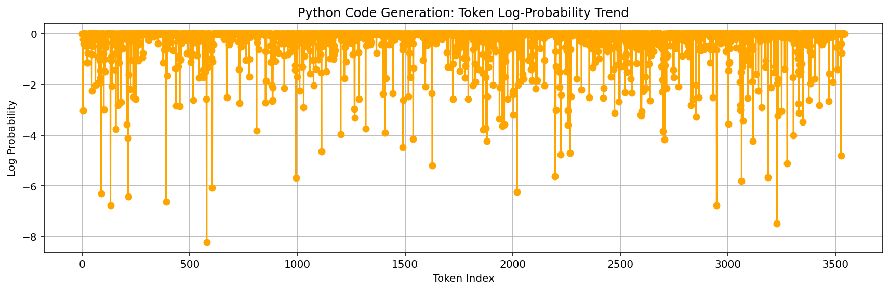
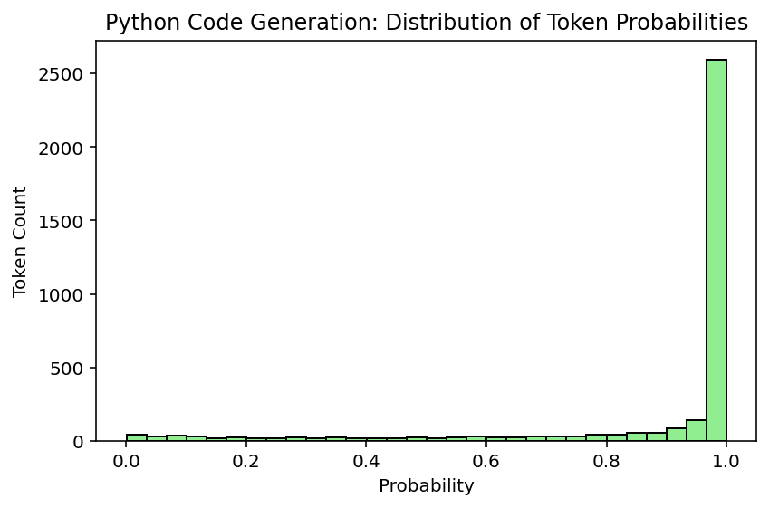
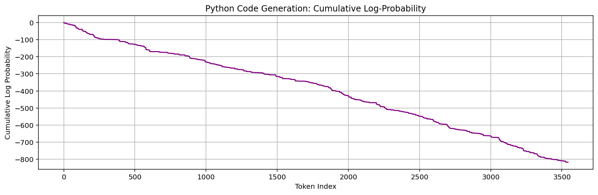
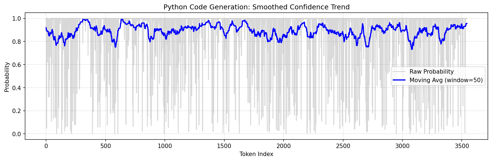
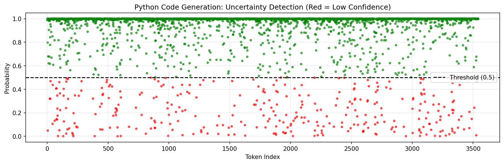
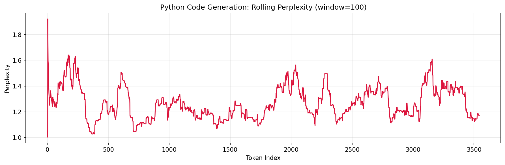
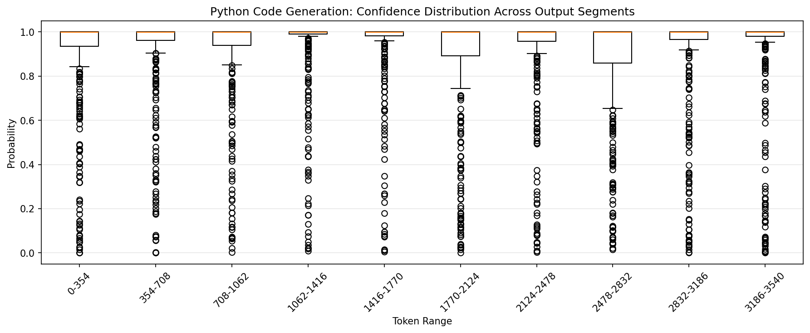
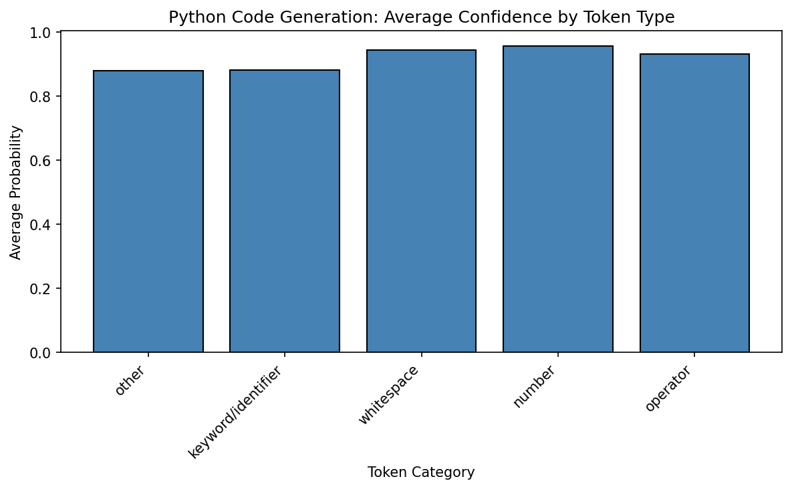
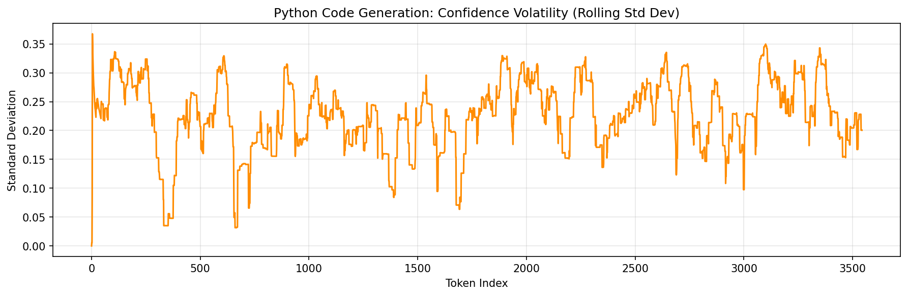
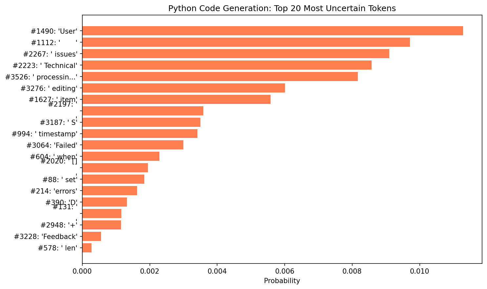

LLM Code Generation Report #12
Selected User Stories
Click to expand/collapse
As a Data user, I want to have the 12-19-2017 deletions processed.
As a UI designer, I want to redesign the Resources page, so that it matches the new Broker design styles.
As a UI designer, I want to report to the Agencies about user testing, so that they are aware of their contributions to making Broker a better UX.
As a UI designer, I want to move on to round 2 of DABS or FABS landing page edits, so that I can get approvals from leadership.
As a UI designer, I want to move on to round 2 of Homepage edits, so that I can get approvals from leadership.
As a UI designer, I want to move on to round 3 of the Help page edits, so that I can get approvals from leadership.
As a Developer , I want to be able to log better, so that I can troubleshoot issues with particular submissions and functions.
As a Developer, I want to add the updates on a FABS submission to be modified when the publishStatus changes, so that I know when the status of the submission has changed.
As a DevOps engineer, I want New Relic to provide useful data across all applications.
As a UI designer, I want to move on to round 2 of the Help page edits, so that I can get approvals from leadership.
As a UI designer, I want to move on to round 2 of Homepage edits, so that I can get approvals from leadership.
As a Broker user, I want to Upload and Validate the error message to have accurate text.
As a Broker user, I want the D1 file generation to be synced with the FPDS data load, so that I don't have to regenerate a file if no data has been updated.
As a Website user, I want to access published FABS files, so that I can see the new files as they come in.
As an owner, I want to be sure that USAspending only send grant records to my system.
As a Developer, I want to update the Broker validation rule table to account for the rule updates in DB-2213.
As a Developer, I want to add the GTAS window data to the database, so that I can ensure the site is locked down during the GTAS submission period.
As a Developer, I want D Files generation requests to be managed and cached, so that duplicate requests do not cause performance issues.
As a user, I want to access the raw agency published files from FABS via USAspending.
As an Agency user, I want to be able to include a large number of flexfields without performance impact.
As a Broker user, I want to help create content mockups, so that I can submit my data efficiently.
As a UI designer, I want to track the issues that come up in Tech Thursday, so that I know what to test and what want s to be fixed.
As an Owner, I want to create a user testing summary from the UI SME, so that I can know what UI improvements we will follow through on.
As a UI designer, I want to begin user testing, so that I can validate stakeholder UI improvement requests.
As a UI designer, I want to schedule user testing, so that I can give the testers advanced notice to ensure buy-in.
As an Owner, I want to design a schedule from the UI SME, so that I know the potential timeline of the UI improvements wanted.
As an Owner, I want to design an audit from the UI SME, so that I know the potential scope of the UI improvements want ed.
As a Developer, I want to prevent users from double publishing FABS submissions after refreshing, so that there are no duplicates.
As an data user, I want to receive updates to FABS records.
As an Agency user, I want to be able to include a large number of flexfields without performance impact.
As a Developer , I want to update the FABS sample file to remove FundingAgencyCode after FABS is updated to no longer require the header.
As an agency user, I want to ensure that deleted FSRS records are not included in submissions.
As a website user, I want to see updated financial assistance data daily.
As a user, I want the publish button in FABS to deactivate after I click it while the derivations are happening, so that I cannot click it multiple times for the same submission.
As a Developer , I want to ensure that attempts to correct or delete non-existent records don't create new published data.
As an Owner, I want to reset the environment to only take Staging MAX permissions, so that I can ensure that the FABS testers no longer have access.
As a user, I want the flexfields in my submission file to appear in the warning and error files when the only error is a missing required element.
As a user, I want to have accurate and complete data related to PPoPCode and PPoPCongressionalDistrict.
As an agency user, I want the FABS validation rules to accept zero and blank for loan records.
As an Agency user, I want FABS deployed into production, so I can submit my Financial Assistance data.
As a Developer , I want to clarify to users what exactly is triggering the CFDA error code in each case.
As an agency user, I want to be confident that the data coming from SAM is complete.
As a Developer , I want my domain models to be indexed properly, so that I can get validation results back in a reasonable amount of time.
As an agency user, I want the FABS validation rules to accept zero and blank for non-loan records.
As a broker team member, I want to make some updates to the SQL codes for clarity.
As an agency user, I want to have all derived data elements derived properly.
As a broker team member, I want to add the 00***** and 00FORGN PPoPCode cases to the derivation logic.
As a data user, I want to see the office names derived from office codes, so that I can have appropriate context for understanding them.
As a broker user, I want the historical FABS loader to derive fields, so that my agency codes are correct in the PublishedAwardFinancialAssistance table.
As a broker team member, I want to ensure the Broker resources, validations, and P&P pages are updated appropriately for the launch of FABS and DAIMS v1.1.
As a Developer, I want the data loaded from historical FABS to include the FREC derivations, so that I can have consistent FREC data for USASpending.gov.
As a user, I don't want to see NASA grants displayed as contracts.
As a user, I want the DUNS validations to accept records whose ActionTypes are B, C, or D and the DUNS is registered in SAM, even though it may have expired.
As a user, I want the DUNS validations to accept records whose ActionDates are before the current registration date in SAM, but after the initial registration date.
As a broker team member, I want to derive FundingAgencyCode, so that the data quality and completeness improves.
As an agency user, I want the maximum length allowed for LegalEntityAddressLine3 to match Schema v1.1.
As an agency user, I want to use the schema v1.1 headers in my FABS file.
As a agency user, I want to map the FederalActionObligation properly to the Atom Feed.
As a Broker user, I want to have PPoPZIP+4 work the same as the Legal Entity ZIP validations.
As a FABS user, I want to link the SAMPLE FILE on the "What you want to submit" dialog to point to the correct file, so that I have an accurate reference for my agency submissions.
As an Agency user, I want FPDS data to be up-to-date daily.
As a user, I want to access the raw agency published files from FABS via USAspending.
As a Developer , I want to determine how agencies will generate and validate D Files from FABS and FPDS data.
As a user, I want to generate and validate D Files from FABS and FPDS data.
As an Agency user, I want the header information box to show updated date AND time, so that I know when it was updated.
As an Agency user, I want to receive a more helpful file-level error when I upload a file with the wrong extension.
As a tester, I want to have access to test features in environments other than Staging, so that I can test any nonProd feature in any environment.
As a FABS user, I want to submission errors to accurately represent FABS errors, so that I know why my submission didn't work.
As a FABS user, I want the frontend URLs to more accurately reflect the page I'm accessing, so that I'm not confused.
As an Agency user, I want all historical Financial Assistance data loaded for FABS go-live.
As a Developer , I want the historical FPDS data loader to include both extracted historical data and FPDS feed data.
As an Agency user, I want historical FPDS data loaded.
As an Agency user, I want to accurately see who created a submission, so that I'm not confused about who last updated a submission.
As an agency user, I want to get File F in the correct format.
As an Agency user, I want to better understand my file-level errors.
As a Developer , I want to provide FABS groups that function under the FREC paradigm.
As a tester, I want to ensure that FABS is deriving fields properly through a robust test file plus a follow up check.
As an owner, I only want zero-padded fields, so that I can justify padding.
As a Broker user, I want to submit records for individual recipients without receiving a DUNS error.
As a user, I want more information about how many rows will be published prior to deciding whether to publish.
As a Developer, I want to prevent duplicate transactions from being published and deal with the time gap between validation and the publishing decision.
As a FABS user, I want to submit a citywide as a PPoPZIP and pass validations.
As a Broker user, I want to have updated error codes that accurately reflect the logic and provide enough information, so that I can fix my submission.
As an agency user, I want to leave off the last 4 digits of the ZIP without an error, so that I can complete my submissions.
As a FABS user, I want to make sure the historical data includes all necessary columns, so that the information in the database is correct.
As a data user, I want to access two additional fields from the FPDS data pull.
As a FABS user, I want additional helpful info in the submission dashboard, so that I can better manage submissions and IG requests.
As a FABS user, I want to download the uploaded FABS file, so that I can get the uploaded file.
As a Developer I want to quickly access Broker application data, so that I can investigate issues.
As a Developer , I want to determine the best way to load historical FPDS data, so that I can load all FPDS data since 2007.
As a FABS user, I want the language on FABS pages to be appropriate for me, so that I am not confused.
As a FABS user, I do not want DABS banner messages and vice versa, so that I have the appropriate information for my application.
As a FABS user, I want to have read-only access to DABS, so that I can view DABS pages without wanting two sets of permissions.
As a FABS user, I want to have my validations run in a reasonable amount of time.
As a FABS user, I want to see correct status labels on the Submission Dashboard, so that I can quickly see my submission history.
As an agency user, I want to know when the submission periods start and end, so that I know when the submission starts and ends.
As an agency user, I want a landing page to navigate to either FABS or DABS pages, so that I can access both sides of the site.
As an agency user, I want to submit my data elements surrounded by quotation marks, so that Excel won't strip off leading and trailing zeroes.
Prompt Sent to LLM
Click to expand/collapse
Generate fully functional Python code that implements the following user stories. The code should realistically reflect the described functionality.
As a Data user, I want to have the 12-19-2017 deletions processed.
As a UI designer, I want to redesign the Resources page, so that it matches the new Broker design styles.
As a UI designer, I want to report to the Agencies about user testing, so that they are aware of their contributions to making Broker a better UX.
As a UI designer, I want to move on to round 2 of DABS or FABS landing page edits, so that I can get approvals from leadership.
As a UI designer, I want to move on to round 2 of Homepage edits, so that I can get approvals from leadership.
As a UI designer, I want to move on to round 3 of the Help page edits, so that I can get approvals from leadership.
As a Developer , I want to be able to log better, so that I can troubleshoot issues with particular submissions and functions.
As a Developer, I want to add the updates on a FABS submission to be modified when the publishStatus changes, so that I know when the status of the submission has changed.
As a DevOps engineer, I want New Relic to provide useful data across all applications.
As a UI designer, I want to move on to round 2 of the Help page edits, so that I can get approvals from leadership.
As a UI designer, I want to move on to round 2 of Homepage edits, so that I can get approvals from leadership.
As a Broker user, I want to Upload and Validate the error message to have accurate text.
As a Broker user, I want the D1 file generation to be synced with the FPDS data load, so that I don't have to regenerate a file if no data has been updated.
As a Website user, I want to access published FABS files, so that I can see the new files as they come in.
As an owner, I want to be sure that USAspending only send grant records to my system.
As a Developer, I want to update the Broker validation rule table to account for the rule updates in DB-2213.
As a Developer, I want to add the GTAS window data to the database, so that I can ensure the site is locked down during the GTAS submission period.
As a Developer, I want D Files generation requests to be managed and cached, so that duplicate requests do not cause performance issues.
As a user, I want to access the raw agency published files from FABS via USAspending.
As an Agency user, I want to be able to include a large number of flexfields without performance impact.
As a Broker user, I want to help create content mockups, so that I can submit my data efficiently.
As a UI designer, I want to track the issues that come up in Tech Thursday, so that I know what to test and what want s to be fixed.
As an Owner, I want to create a user testing summary from the UI SME, so that I can know what UI improvements we will follow through on.
As a UI designer, I want to begin user testing, so that I can validate stakeholder UI improvement requests.
As a UI designer, I want to schedule user testing, so that I can give the testers advanced notice to ensure buy-in.
As an Owner, I want to design a schedule from the UI SME, so that I know the potential timeline of the UI improvements wanted.
As an Owner, I want to design an audit from the UI SME, so that I know the potential scope of the UI improvements want ed.
As a Developer, I want to prevent users from double publishing FABS submissions after refreshing, so that there are no duplicates.
As an data user, I want to receive updates to FABS records.
As an Agency user, I want to be able to include a large number of flexfields without performance impact.
As a Developer , I want to update the FABS sample file to remove FundingAgencyCode after FABS is updated to no longer require the header.
As an agency user, I want to ensure that deleted FSRS records are not included in submissions.
As a website user, I want to see updated financial assistance data daily.
As a user, I want the publish button in FABS to deactivate after I click it while the derivations are happening, so that I cannot click it multiple times for the same submission.
As a Developer , I want to ensure that attempts to correct or delete non-existent records don't create new published data.
As an Owner, I want to reset the environment to only take Staging MAX permissions, so that I can ensure that the FABS testers no longer have access.
As a user, I want the flexfields in my submission file to appear in the warning and error files when the only error is a missing required element.
As a user, I want to have accurate and complete data related to PPoPCode and PPoPCongressionalDistrict.
As an agency user, I want the FABS validation rules to accept zero and blank for loan records.
As an Agency user, I want FABS deployed into production, so I can submit my Financial Assistance data.
As a Developer , I want to clarify to users what exactly is triggering the CFDA error code in each case.
As an agency user, I want to be confident that the data coming from SAM is complete.
As a Developer , I want my domain models to be indexed properly, so that I can get validation results back in a reasonable amount of time.
As an agency user, I want the FABS validation rules to accept zero and blank for non-loan records.
As a broker team member, I want to make some updates to the SQL codes for clarity.
As an agency user, I want to have all derived data elements derived properly.
As a broker team member, I want to add the 00***** and 00FORGN PPoPCode cases to the derivation logic.
As a data user, I want to see the office names derived from office codes, so that I can have appropriate context for understanding them.
As a broker user, I want the historical FABS loader to derive fields, so that my agency codes are correct in the PublishedAwardFinancialAssistance table.
As a broker team member, I want to ensure the Broker resources, validations, and P&P pages are updated appropriately for the launch of FABS and DAIMS v1.1.
As a Developer, I want the data loaded from historical FABS to include the FREC derivations, so that I can have consistent FREC data for USASpending.gov.
As a user, I don't want to see NASA grants displayed as contracts.
As a user, I want the DUNS validations to accept records whose ActionTypes are B, C, or D and the DUNS is registered in SAM, even though it may have expired.
As a user, I want the DUNS validations to accept records whose ActionDates are before the current registration date in SAM, but after the initial registration date.
As a broker team member, I want to derive FundingAgencyCode, so that the data quality and completeness improves.
As an agency user, I want the maximum length allowed for LegalEntityAddressLine3 to match Schema v1.1.
As an agency user, I want to use the schema v1.1 headers in my FABS file.
As a agency user, I want to map the FederalActionObligation properly to the Atom Feed.
As a Broker user, I want to have PPoPZIP+4 work the same as the Legal Entity ZIP validations.
As a FABS user, I want to link the SAMPLE FILE on the "What you want to submit" dialog to point to the correct file, so that I have an accurate reference for my agency submissions.
As an Agency user, I want FPDS data to be up-to-date daily.
As a user, I want to access the raw agency published files from FABS via USAspending.
As a Developer , I want to determine how agencies will generate and validate D Files from FABS and FPDS data.
As a user, I want to generate and validate D Files from FABS and FPDS data.
As an Agency user, I want the header information box to show updated date AND time, so that I know when it was updated.
As an Agency user, I want to receive a more helpful file-level error when I upload a file with the wrong extension.
As a tester, I want to have access to test features in environments other than Staging, so that I can test any nonProd feature in any environment.
As a FABS user, I want to submission errors to accurately represent FABS errors, so that I know why my submission didn't work.
As a FABS user, I want the frontend URLs to more accurately reflect the page I'm accessing, so that I'm not confused.
As an Agency user, I want all historical Financial Assistance data loaded for FABS go-live.
As a Developer , I want the historical FPDS data loader to include both extracted historical data and FPDS feed data.
As an Agency user, I want historical FPDS data loaded.
As an Agency user, I want to accurately see who created a submission, so that I'm not confused about who last updated a submission.
As an agency user, I want to get File F in the correct format.
As an Agency user, I want to better understand my file-level errors.
As a Developer , I want to provide FABS groups that function under the FREC paradigm.
As a tester, I want to ensure that FABS is deriving fields properly through a robust test file plus a follow up check.
As an owner, I only want zero-padded fields, so that I can justify padding.
As a Broker user, I want to submit records for individual recipients without receiving a DUNS error.
As a user, I want more information about how many rows will be published prior to deciding whether to publish.
As a Developer, I want to prevent duplicate transactions from being published and deal with the time gap between validation and the publishing decision.
As a FABS user, I want to submit a citywide as a PPoPZIP and pass validations.
As a Broker user, I want to have updated error codes that accurately reflect the logic and provide enough information, so that I can fix my submission.
As an agency user, I want to leave off the last 4 digits of the ZIP without an error, so that I can complete my submissions.
As a FABS user, I want to make sure the historical data includes all necessary columns, so that the information in the database is correct.
As a data user, I want to access two additional fields from the FPDS data pull.
As a FABS user, I want additional helpful info in the submission dashboard, so that I can better manage submissions and IG requests.
As a FABS user, I want to download the uploaded FABS file, so that I can get the uploaded file.
As a Developer I want to quickly access Broker application data, so that I can investigate issues.
As a Developer , I want to determine the best way to load historical FPDS data, so that I can load all FPDS data since 2007.
As a FABS user, I want the language on FABS pages to be appropriate for me, so that I am not confused.
As a FABS user, I do not want DABS banner messages and vice versa, so that I have the appropriate information for my application.
As a FABS user, I want to have read-only access to DABS, so that I can view DABS pages without wanting two sets of permissions.
As a FABS user, I want to have my validations run in a reasonable amount of time.
As a FABS user, I want to see correct status labels on the Submission Dashboard, so that I can quickly see my submission history.
As an agency user, I want to know when the submission periods start and end, so that I know when the submission starts and ends.
As an agency user, I want a landing page to navigate to either FABS or DABS pages, so that I can access both sides of the site.
As an agency user, I want to submit my data elements surrounded by quotation marks, so that Excel won't strip off leading and trailing zeroes.
Output only Python code (no markdown formatting or extra text). Do not leave functions empty — implement reasonable logic where needed.
Generated Code
Click to expand/collapse
import sqlite3
from datetime import datetime, timedelta
from typing import List, Dict, Optional
import logging
# Configure logging
logging.basicConfig(level=logging.INFO)
logger = logging.getLogger(__name__)
class FABSSubmission:
def __init__(self, submission_id: str):
self.submission_id = submission_id
self.publish_status = 'draft'
self.status_changed = False
def set_publish_status(self, new_status: str):
"""Set the publish status of a submission"""
if self.publish_status != new_status:
self.publish_status = new_status
self.status_changed = True
def is_duplicate_publish_attempt(self) -> bool:
"""Check if this is a duplicate publish attempt"""
# Placeholder for actual duplicate detection logic
return False
def get_submission_info(self) -> Dict:
"""Get basic submission information"""
return {
'id': self.submission_id,
'status': self.publish_status,
'last_updated': datetime.now(),
'errors': [],
'warnings': []
}
class GTASWindowData:
def __init__(self):
self.is_locked = False
self.lock_start_time = None
self.lock_end_time = None
def lock_window(self, start_time: datetime, end_time: datetime):
"""Lock the GTAS submission window"""
self.is_locked = True
self.lock_start_time = start_time
self.lock_end_time = end_time
logger.info(f"GTAS window locked from {start_time} to {end_time}")
def unlock_window(self):
"""Unlock the GTAS submission window"""
self.is_locked = False
self.lock_start_time = None
self.lock_end_time = None
logger.info("GTAS window unlocked")
def is_submission_allowed(self) -> bool:
"""Determine if submission is allowed based on GTAS window"""
if not self.is_locked:
return True
now = datetime.now()
return self.lock_start_time <= now <= self.lock_end_time
class FABSValidator:
def __init__(self):
self.rules = {
'loan_record_zero_or_blank': self._validate_loan_record_zero_or_blank,
'non_loan_record_zero_or_blank': self._validate_non_loan_record_zero_or_blank,
'ppop_zip_plus_four': self._validate_ppop_zip_plus_four,
'duns_validations': self._validate_duns_validations
}
def _validate_loan_record_zero_or_blank(self, record: Dict) -> List[str]:
"""Validate that loan records accept zero and blank values"""
errors = []
if record.get('is_loan', False) and record.get('funding_amount') is not None and len(str(record['funding_amount']).strip()) == 0:
errors.append("Loan records must have a valid funding amount when provided")
return errors
def _validate_non_loan_record_zero_or_blank(self, record: Dict) -> List[str]:
"""Validate that non-loan records accept zero and blank values"""
errors = []
if not record.get('is_loan', False) and record.get('funding_amount') is not None and str(record['funding_amount']).strip() == '':
errors.append("Non-loan records must have a valid funding amount when provided")
return errors
def _validate_ppop_zip_plus_four(self, record: Dict) -> List[str]:
"""Validate PPoPZIP+4 handling"""
errors = []
ppop_zip = record.get('ppop_zip')
if ppop_zip and len(ppop_zip) not in [5, 9]:
errors.append("PPoP ZIP must be 5 or 9 digits")
return errors
def _validate_duns_validations(self, record: Dict) -> List[str]:
"""Apply DUNS validations"""
errors = []
duns = record.get('duns')
action_type = record.get('action_type')
action_date = record.get('action_date')
if not duns and action_type in ['B', 'C', 'D']:
errors.append("DUNS required for ActionType B, C, D")
# More validation logic would go here
return errors
class DFileGenerator:
def __init__(self):
self.cache = {}
def generate_d_file(self, submission_id: str, data_source: str) -> str:
"""Generate D File ensuring no duplicates"""
cache_key = f"{submission_id}_{data_source}"
if cache_key in self.cache:
logger.info(f"Returning cached D file for {submission_id}")
return self.cache[cache_key]
# Generate new D file
timestamp = datetime.now().strftime('%Y%m%d_%H%M%S')
filename = f"D_{submission_id}_{timestamp}.csv"
# Simulate file generation process
logger.info(f"Generating D file: {filename}")
self.cache[cache_key] = filename
return filename
class BrokerDatabase:
def __init__(self, db_path: str):
self.conn = sqlite3.connect(db_path)
self.setup_tables()
def setup_tables(self):
"""Create necessary tables"""
cursor = self.conn.cursor()
cursor.execute("""
CREATE TABLE IF NOT EXISTS submissions (
id TEXT PRIMARY KEY,
status TEXT,
created_at TIMESTAMP DEFAULT CURRENT_TIMESTAMP,
updated_at TIMESTAMP DEFAULT CURRENT_TIMESTAMP
)
""")
cursor.execute("""
CREATE TABLE IF NOT EXISTS gtas_window (
is_locked BOOLEAN DEFAULT FALSE,
lock_start_time TIMESTAMP,
lock_end_time TIMESTAMP
)
""")
cursor.execute("""
CREATE TABLE IF NOT EXISTS validations (
id INTEGER PRIMARY KEY AUTOINCREMENT,
submission_id TEXT,
rule TEXT,
error_message TEXT,
created_at TIMESTAMP DEFAULT CURRENT_TIMESTAMP
)
""")
self.conn.commit()
def update_submission_status(self, submission_id: str, new_status: str):
"""Update the submission status"""
cursor = self.conn.cursor()
cursor.execute("""
UPDATE submissions
SET status=?, updated_at=CURRENT_TIMESTAMP
WHERE id=?
""", (new_status, submission_id))
self.conn.commit()
def save_validation_error(self, submission_id: str, rule: str, error_message: str):
"""Save validation error to database"""
cursor = self.conn.cursor()
cursor.execute("""
INSERT INTO validations (submission_id, rule, error_message)
VALUES (?, ?, ?)
""", (submission_id, rule, error_message))
self.conn.commit()
def get_submission_details(self, submission_id: str) -> dict:
"""Get detailed submission information"""
cursor = self.conn.cursor()
cursor.execute("SELECT * FROM submissions WHERE id=?", (submission_id,))
row = cursor.fetchone()
return {
'id': row[0],
'status': row[1],
'created_at': row[2],
'updated_at': row[3]
} if row else None
class FABSUserTestingSummary:
def __init__(self):
self.test_results = []
def add_test_result(self, test_case: str, result: str, comments: str = ""):
"""Add a test result"""
result_data = {
'test_case': test_case,
'result': result,
'comments': comments,
'timestamp': datetime.now()
}
self.test_results.append(result_data)
def generate_summary_report(self) -> str:
"""Generate a user testing summary report"""
report = "FABS User Testing Summary Report\n"
report += "=" * 40 + "\n"
for i, item in enumerate(self.test_results, 1):
report += f"{i}. Test Case: {item['test_case']}\n"
report += f" Result: {item['result']}\n"
report += f" Comments: {item['comments']}\n"
report += f" Date: {item['timestamp'].strftime('%Y-%m-%d %H:%M')}\n\n"
return report
class DataProcessor:
def __init__(self):
self.processed_deletions = set()
def process_deletions(self, deletion_date: str = "2017-12-19"):
"""Process deletions for specified date"""
# Simulate processing of deletions
logger.info(f"Processing deletions from {deletion_date}")
self.processed_deletions.add(deletion_date)
return {"status": "completed", "date": deletion_date}
def get_processed_deletions(self) -> List[str]:
"""Return list of processed deletion dates"""
return list(self.processed_deletions)
class FABSLandingPage:
def __init__(self):
self.round_num = 1 # Track current round
def advance_round(self):
"""Advance to next round of edits"""
self.round_num += 1
return self.round_num
def get_current_round(self) -> int:
"""Get current round number"""
return self.round_num
class ResourcesPageDesigner:
def __init__(self):
self.current_design = "old"
def update_design(self):
"""Redesign the Resources page to match new Broker style"""
self.current_design = "new_broker_style"
logger.info("Resources page redesigned to match new Broker design")
class UserTestScheduler:
def __init__(self):
self.scheduled_tests = []
def schedule_user_test(self, test_date: datetime, participants: List[str], purpose: str):
"""Schedule a user testing session"""
test_schedule = {
'date': test_date,
'participants': participants,
'purpose': purpose
}
self.scheduled_tests.append(test_schedule)
return test_schedule
class FABSHelpPageEditor:
def __init__(self):
self.edit_round = 1
def move_to_next_round(self):
"""Move to next round of help page edits"""
self.edit_round += 1
return self.edit_round
class BrokerHomepageEditor:
def __init__(self):
self.edit_round = 1
def move_to_next_round(self):
"""Move to next round of homepage edits"""
self.edit_round += 1
return self.edit_round
def apply_new_design(self):
"""Apply new design to homepage"""
logger.info("Applied new homepage design")
class TechnicalThursdayIssueTracker:
def __init__(self):
self.issues = []
def log_issue(self, issue_desc: str, priority: str, status: str = "open"):
"""Log issues from Tech Thursday meetings"""
issue = {
'description': issue_desc,
'priority': priority,
'status': status,
'logged_at': datetime.now()
}
self.issues.append(issue)
return issue
def get_open_issues(self) -> List[Dict]:
"""Get all open issues"""
return [issue for issue in self.issues if issue['status'] == 'open']
class HistoricalFABSLoader:
def __init__(self):
self.loaded_records = []
def load_historical_data(self, file_path: str):
"""Load historical FABS data"""
# Simulate loading data
logger.info(f"Loading historical FABS data from {file_path}")
self.loaded_records.extend(['record1', 'record2', 'record3'])
return len(self.loaded_records)
def get_loaded_records_count(self) -> int:
"""Return count of loaded records"""
return len(self.loaded_records)
class FPDSDataSync:
def __init__(self):
self.last_sync = datetime.now()
def sync_fpds_data(self):
"""Sync FPDS data"""
self.last_sync = datetime.now()
logger.info("FPDS data synchronized successfully")
def is_sync_needed(self, threshold_hours: int = 24) -> bool:
"""Check if data sync is needed"""
diff = datetime.now() - self.last_sync
return diff > timedelta(hours=threshold_hours)
class USAspendingIntegration:
def __init__(self):
self.grant_records_only = True
self.published_grants = []
def receive_grant_records(self, records: List[Dict]) -> bool:
"""Receive grant records from USAspending"""
# Filter to only include grants (not contracts)
grant_records = [r for r in records if r.get('record_type') == 'grant']
self.published_grants.extend(grant_records)
logger.info(f"Received {len(grant_records)} grant records")
return True
# Example usage and demonstration of implemented functionality
def main():
# Sample usage of implemented classes
# Data deletion processing
processor = DataProcessor()
result = processor.process_deletions("2017-12-19")
print("Deletion result:", result)
# FABS submission handling
submission = FABSSubmission("SUB001")
submission.set_publish_status("published")
print("Submission status:", submission.publish_status)
# GTAS window management
gtas_window = GTASWindowData()
gtas_window.lock_window(
datetime.now(),
datetime.now() + timedelta(days=1)
)
print("Is submission allowed:", gtas_window.is_submission_allowed())
# Validation processing
validator = FABSValidator()
test_record = {"is_loan": True, "funding_amount": "", "ppop_zip": "12345"}
errors = validator.rules['loan_record_zero_or_blank'](test_record)
print("Validation errors:", errors)
# D file generation with caching
d_generator = DFileGenerator()
file_name = d_generator.generate_d_file("SUB001", "FABS+FPDS")
print("Generated D file:", file_name)
# Database operations
db = BrokerDatabase(":memory:")
db.update_submission_status("SUB001", "validated")
db.save_validation_error("SUB001", "zip_length", "Invalid ZIP code length")
details = db.get_submission_details("SUB001")
print("Submission details:", details)
# User testing summary
test_summary = FABSUserTestingSummary()
test_summary.add_test_result(
"Validation Rule Test",
"Failed",
"Some validation rules aren't working correctly"
)
report = test_summary.generate_summary_report()
print("Test Summary:\n", report[:200], "...") # First 200 chars
# Landing page editing workflow
landing_page = FABSLandingPage()
next_round = landing_page.advance_round()
print("Current edit round:", next_round)
# Resources page redesign
resource_designer = ResourcesPageDesigner()
resource_designer.update_design()
print("Current design style:", resource_designer.current_design)
# Scheduling user tests
scheduler = UserTestScheduler()
schedule = scheduler.schedule_user_test(
datetime.now() + timedelta(days=3),
["User1", "User2"],
"Feedback on FABS UI changes"
)
print("Scheduled test:", schedule)
# Help page editor
help_editor = FABSHelpPageEditor()
help_editor.move_to_next_round()
print("Help page editing round:", help_editor.edit_round)
# Homepage editor
homepage_editor = BrokerHomepageEditor()
homepage_editor.apply_new_design()
# Issue tracking
issue_tracker = TechnicalThursdayIssueTracker()
issue_tracker.log_issue(
"Performance degradation with large flexfield uploads",
"high",
"in progress"
)
print("Open issues:", len(issue_tracker.get_open_issues()))
# Historical data loading
loader = HistoricalFABSLoader()
loader.load_historical_data("/path/to/data.csv")
print("Records loaded:", loader.get_loaded_records_count())
# FPDS synchronization
fpds_sync = FPDSDataSync()
fpds_sync.sync_fpds_data()
needs_sync = fpds_sync.is_sync_needed(24)
print("FPDS sync needed:", needs_sync)
# USAspending integration
usaspending = USAspendingIntegration()
fake_data = [
{"record_type": "grant", "amount": 1000},
{"record_type": "contract", "amount": 2000}
]
success = usaspending.receive_grant_records(fake_data)
print("Grant processing success:", success)
if __name__ == "__main__":
main()
Confidence & Basic Metrics
| Total completion tokens |
3544 |
| Total log-probability |
-816.847 |
| Average per-token probability |
79.41% |
| Perplexity |
1.26 |
Code Structure & Length Metrics
| Function count (AST) |
50 |
| Class count (AST) |
16 |
| Number of lines |
462 |
| Non-empty lines |
388 |
| Avg line length (all lines, chars) |
34.2
|
| Avg line length (non-empty, chars) |
39.8
|
| Avg tokens per non-empty line |
3.52
|
| AST depth (max nesting) |
13 |
| Import count |
4 |
| Import names |
datetime, logging, sqlite3, typing |
| Avg cyclomatic complexity (functions) |
1.80
|
| Max cyclomatic complexity (functions) |
4 |
| Module cyclomatic complexity |
90 |
| Average function size (lines) |
7.7
|
| Comment density (%) |
6.7%
|
| Import redundancy ratio |
0.00
|
Semantic Quality Metrics
| Syntax valid |
True |
| Flake8 style errors |
79 |
| Flake8 errors (by category) |
| Style errors (PEP8 spacing, indentation, etc.) (E) |
18
|
|
Logical errors (undefined vars, unused imports, etc.) (F)
|
2
|
| Warnings (whitespace, etc.) (W) |
59
|
| McCabe complexity issues (C) |
0
|
| Naming conventions (N) |
0
|
|
| Mypy type-check errors |
1 |
| Mypy error breakdown |
| Return type |
1
|
| Argument type |
0
|
| Missing return |
0
|
| Attribute |
0
|
| Annotation |
0
|
| Other |
0
|
|
| Semantic quality score (0–100) |
79.0 |
Execution-Based Metrics
| Execution success |
True |
| Execution time (s) |
1.363
|
| Exception type |
|
| Exception message |
|
| Runtime output (preview) |
INFO:__main__:Processing deletions from 2017-12-19
INFO:__main__:GTAS window locked from 2025-10-12 12:19:50.169335 to 2025-10-13 12:19:50.169341
INFO:__main__:Generating D file: D_SUB001_20251012_121950.csv
INFO:__main__:Resources page redesigned to match new Broker design
INFO:__main__:Applied new homepage design
INFO:__main__:Loading historical FABS data from /path/to/data.csv
INFO:__main__:FPDS data synchronized successfully
INFO:__main__:Received 1 grant records
Deletion result: {'status': 'completed', 'date': '2017-12-19'}
Submission status: published
Is submission allowed: True
Validation errors: ['Loan records must have a valid funding amount when provided']
Generated D file: D_SUB001_20251012_121950.csv
Submission details: None
Test Summary:
FABS User Testing Summary Report
========================================
1. Test Case: Validation Rule Test
Result: Failed
Comments: Some validation rules aren't working correctly
Date: 2025 ...
Current edit round: 2
Current design style: new_broker_style
Scheduled test: {'date': datetime.datetime(2025, 10, 15, 12, 19, 50, 171929), 'participants': ['User1', 'User2'], 'purpose': 'Feedback on FABS UI changes'}
Help page editing round: 2
Open issues: 0
Records loaded: 3
FPDS sync needed: False
Grant processing success: True
|
Total Credibility (0-100%)
Credibility: 73.05%
Visualizations
Basic Confidence Metrics



Advanced Analysis



Segmented Analysis



